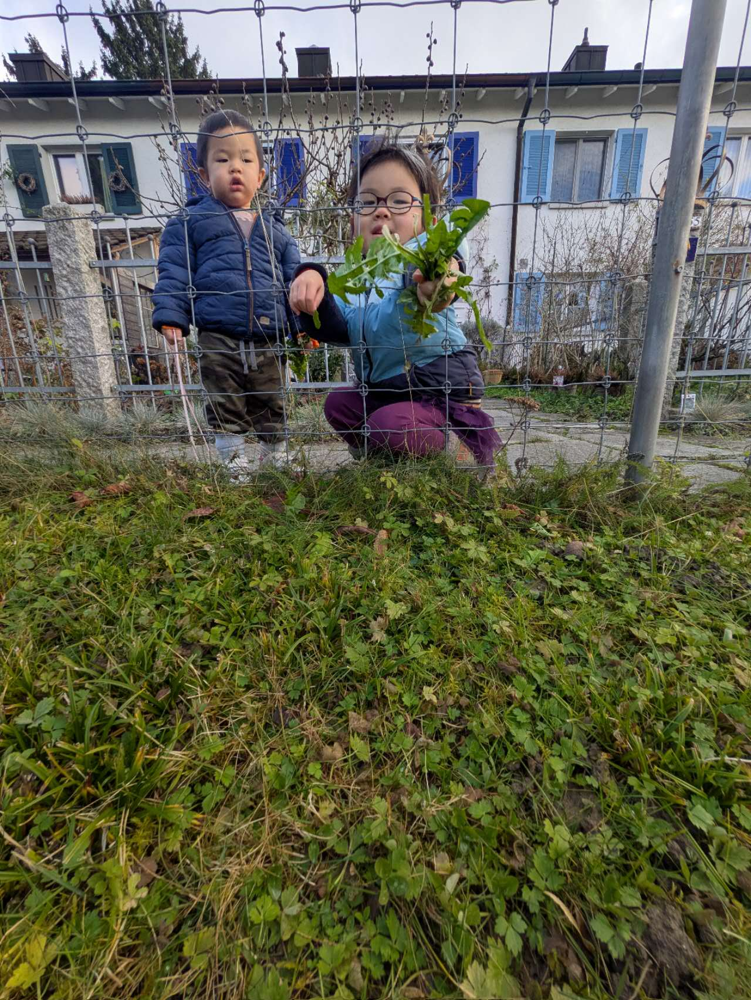
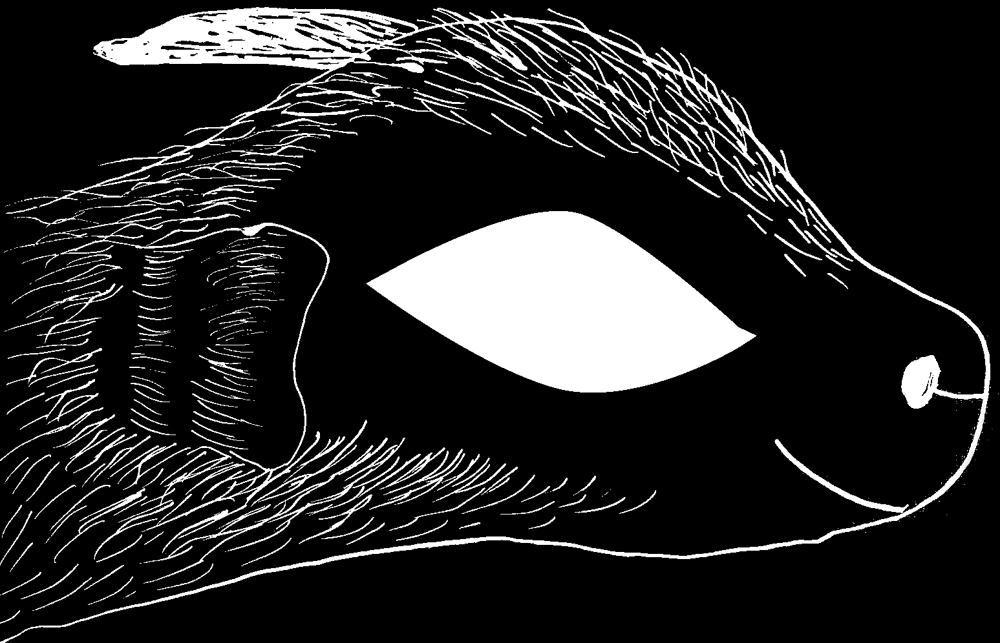
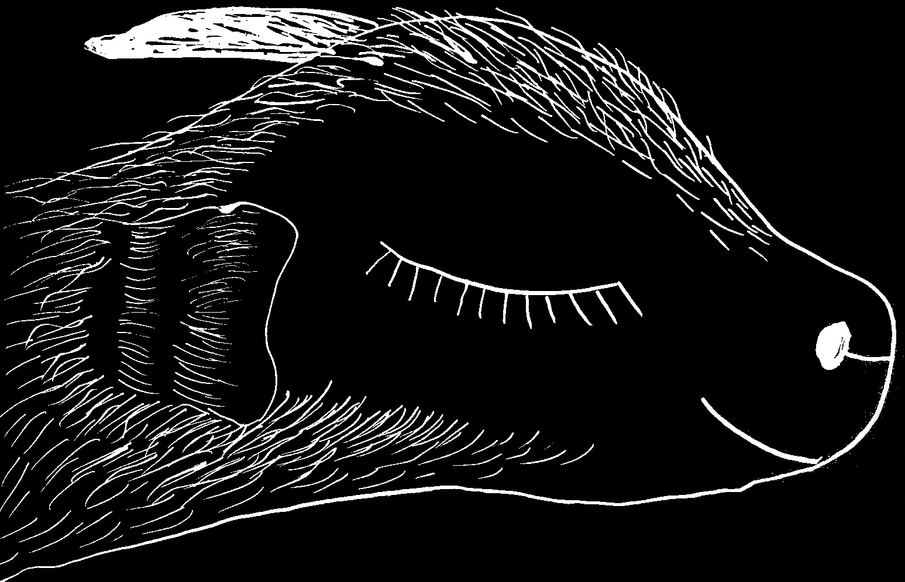
Hier war ich einmal
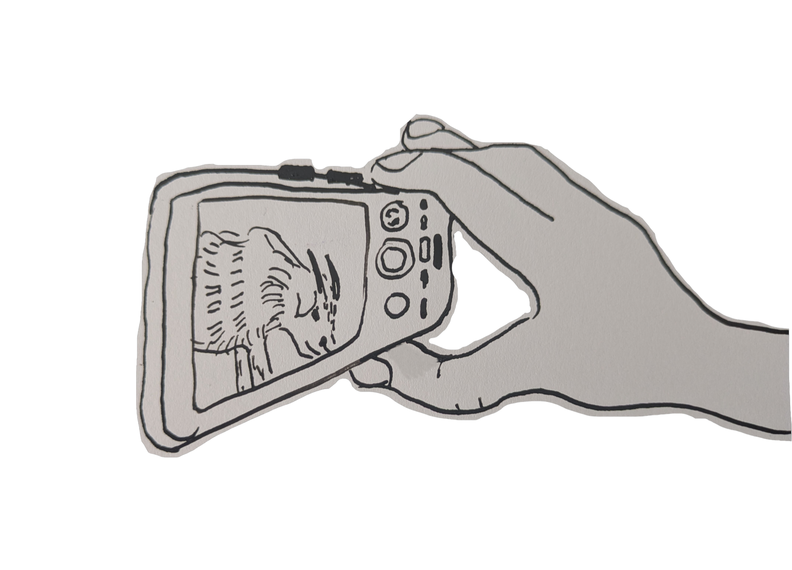
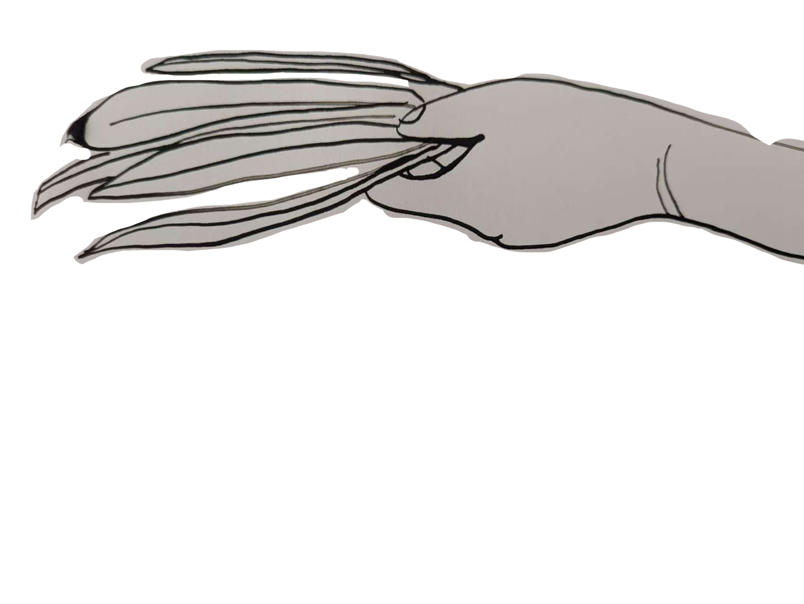
Ich habe viele Besuche.
Ich kannte jeden Wind, jedes Gras, jeden Wanderer.
Niemand gehörte hier – wir alle waren Teil der Erde。
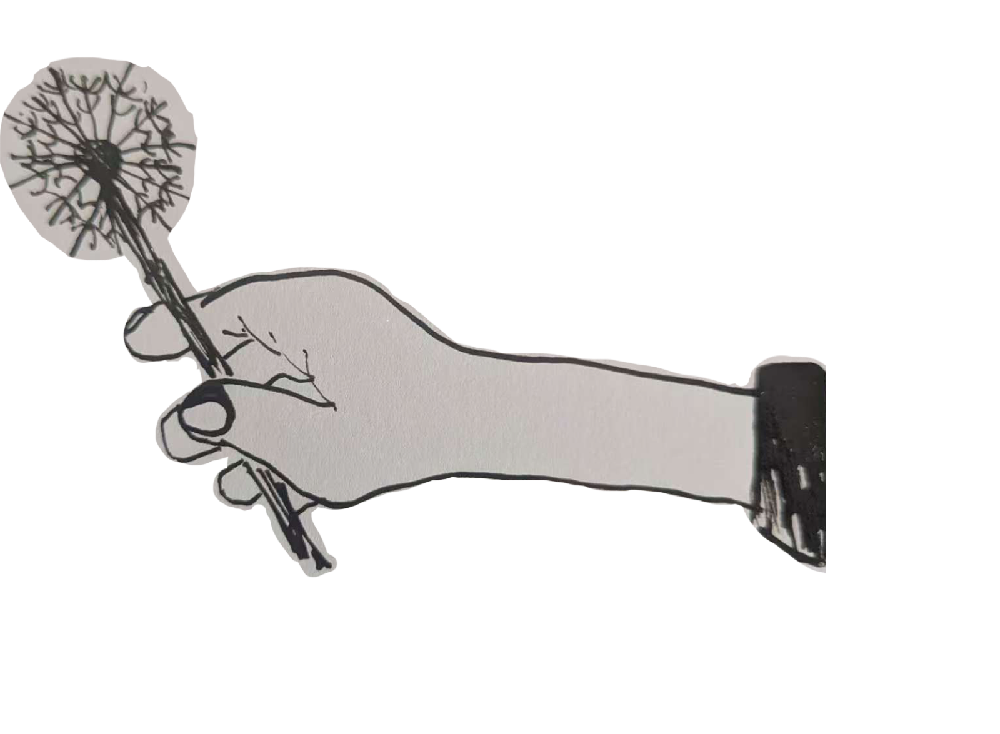
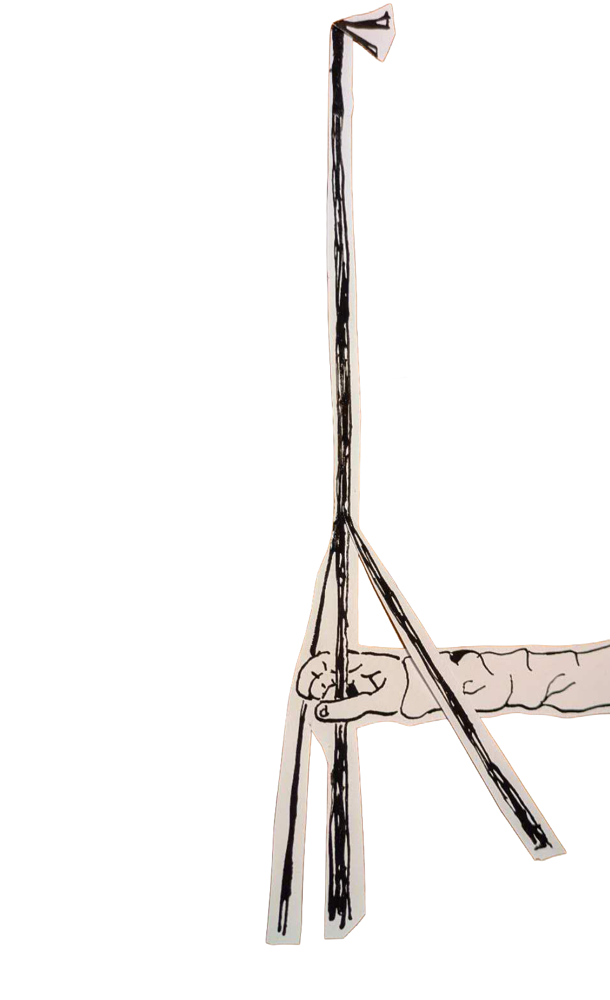
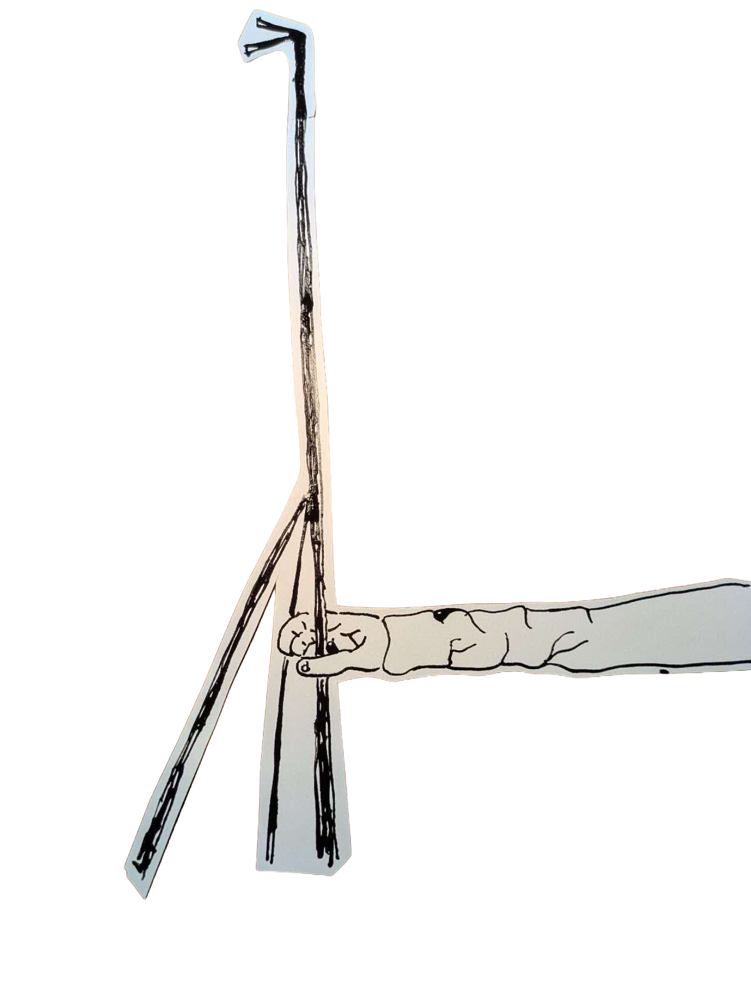
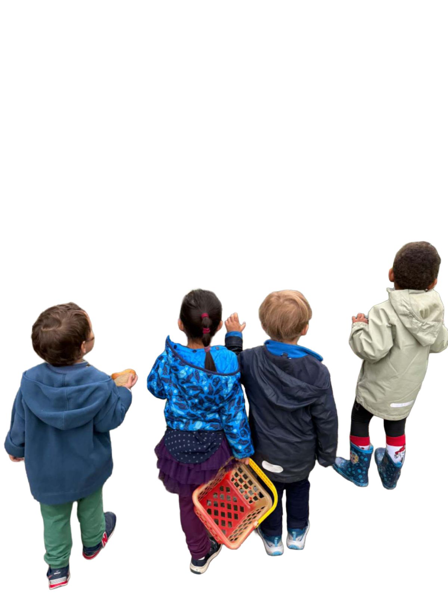
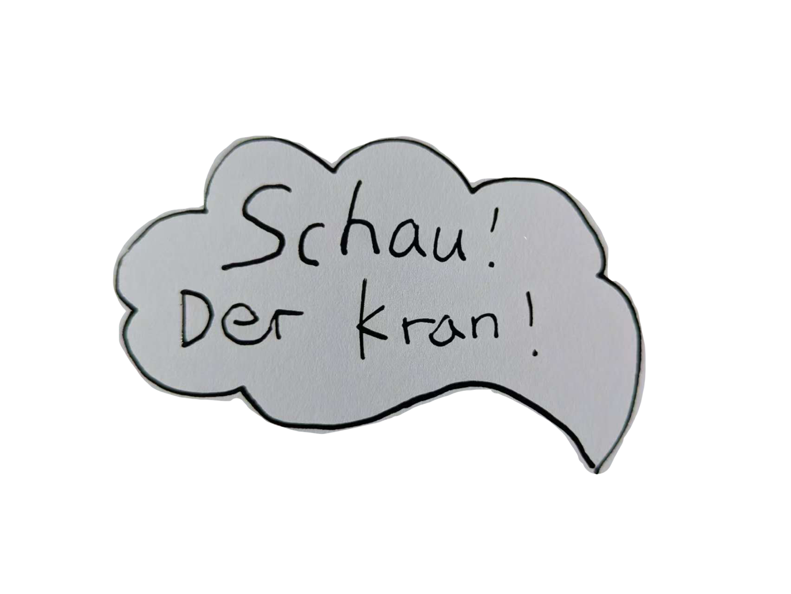
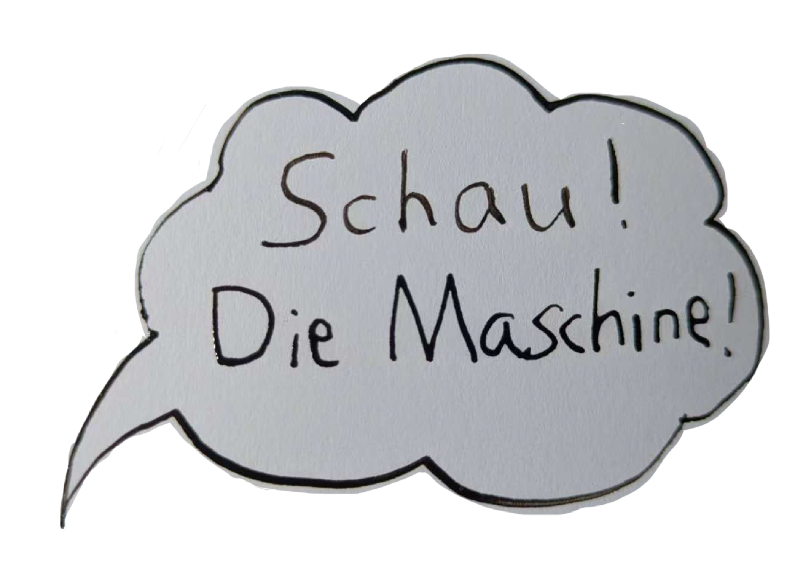
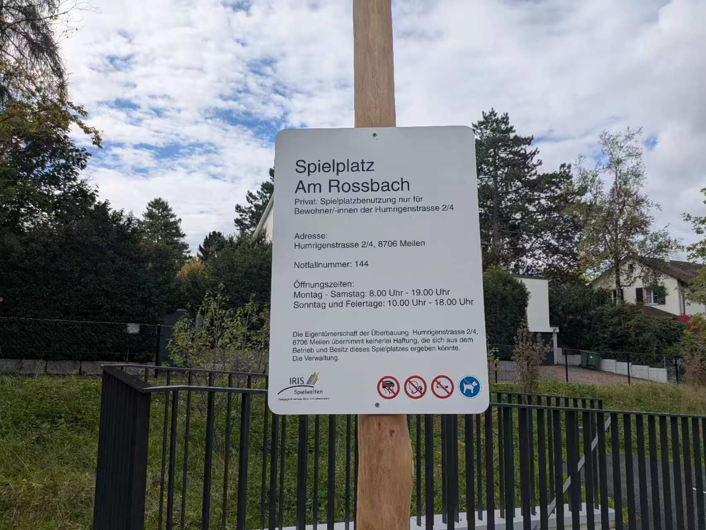
Jetzt steht hier ein neues Gebäude und ein Schild。
Nur selten hört man noch Kinder lachen。
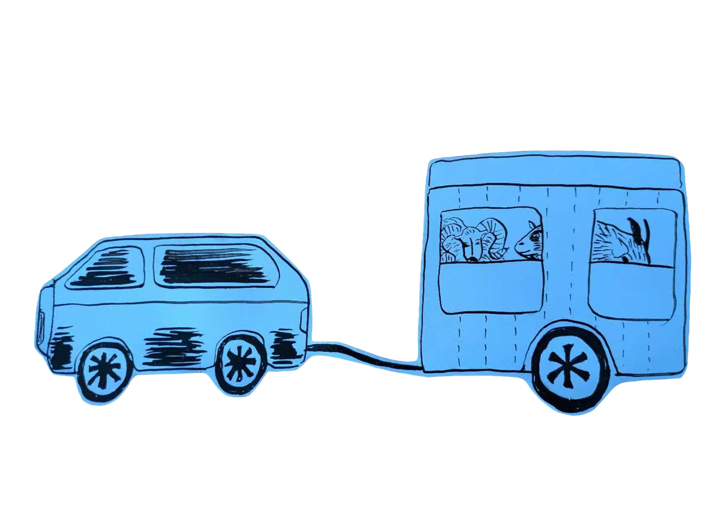
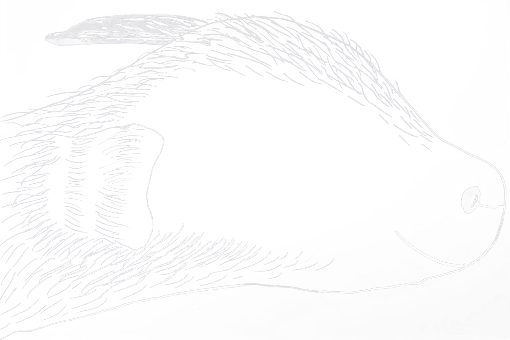
Es war einmal
der Wind und ich erinnern uns leise。
Ein Fenster-Geschichte
von mir und meiner Tochter。
— Yiyunlin
Ich kannte jeden Wind, jedes Gras, jeden Wanderer.
Niemand gehörte hier – wir alle waren Teil der Erde.
Jetzt steht hier ein neues Gebäude und ein Schild.
Nur selten hört man noch Kinder lachen.
Es war einmal
der Wind und ich erinnern uns leise.
Ein Fenster-Geschichte
von mir und meiner Tochter.
— Yiyunlin